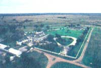

DAVID BURNETT/CONTACT PRESS IMAGES
A more subdued tone marks this sprawling kingdom
of a ranch now that the boss is dead, killed a couple of years ago
when his car was demolished by a pickup in the hands of a
20-year-old who had put away way too much bourbon, or
something. But the barbecues the boss and Mary Sue held
after stock sales or to celebrate holidays with friends and
family have become legends in a state where legends don't
rise easily. His voice, unabashed and penetrating, can
still be heard in his neighbors' memories, booming across
the prairie.Â